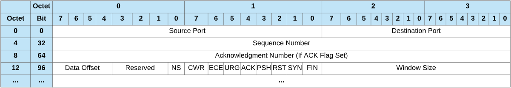

Client: SYN packet sender (Synchronize Sequence Numbers)
The client sends a SYN packet to the server via TCP. It tells the server where it wants to connect, and provides the initial sequence number.
The packet is carrying the header and data for the server. The header has information about the origin and destination IP addresses for the packet. The data is the payload of the packet.
server recieves the packet
Server: SYN/ACK packet sender (ACKnowledgement)
The server sends a SYN/ACK packet telling the client it got the request.
Client responds with ACK, finishing the connection.
This completes the TCP three-way handshake
further read
https://www.baeldung.com/cs/tcp-protocol-syn-ack
